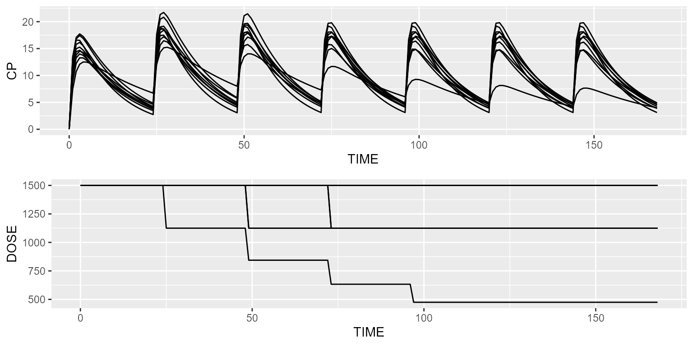

This vignette shows how interruption events can be implemented.
Body weight as a time varying covariate
Assume BW vary over time. Events allow you to implement such time-varying covariates without modifying the dataset. In the example below, BW progressively decreases over time.
model <- model_library$advan2_trans2
model <- model %>% replace(Equation("CL", "THETA_CL*exp(ETA_CL)*pow(BW/70, 0.75)"))
dataset <- Dataset(1) %>%
add(Bolus(time=c(0,24), amount=1000)) %>%
add(Observations(times=0:48)) %>% add(TimeVaryingCovariate("BW", 100))
events <- Events()
event1 <- Event(name="New weight of 60", times=15, fun=function(inits) {
inits$BW <- 60
return(inits)
})
event2 <- Event(name="New weight of 30", times=30, fun=function(inits) {
inits$BW <- 30
return(inits)
})
events <- events %>% add(event1) %>% add(event2)
results <- model %>% simulate(dataset, dest="RxODE", events=events, seed=1, outvars="BW")
gridExtra::grid.arrange(spaghettiPlot(results, "CP"), spaghettiPlot(results, "BW"), ncol=1)
Dose adaptation based on Ctrough value
For this first example of dose adaptation, we’re going to adapt the dose based on Ctrough. Say we’d like Ctrough not to exceed an arbitrary safety limit of 5 mg/L. The rule could be as follows: if Ctrough is greater than 5, multiply the last dose by 0.75, otherwise continue with the same dose. Let’s illustrate this simple rule using events. We will use the first compartment model with absorption from the model library for this purpose.
model <- model_library$advan2_trans2
dataset <- Dataset(10) %>%
add(Observations(times=0:168)) %>%
add(TimeVaryingCovariate("DOSE", 1500))
events <- Events()
event1 <- Event(name="Dose adaptation", times=seq(0, 144, by=24), fun=function(inits) {
inits$DOSE <- ifelse(inits$CP > 5, inits$DOSE*0.75, inits$DOSE)
inits$A_DEPOT <- inits$A_DEPOT + inits$DOSE
return(inits)
})
events <- events %>% add(event1)
results <- model %>% simulate(dataset, dest="RxODE", events=events, seed=1, outvars="DOSE")
gridExtra::grid.arrange(spaghettiPlot(results, "CP"), spaghettiPlot(results, "DOSE"), ncol=1)